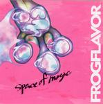

| Artist: | Frogflavor |
| Title: | Space Of Magic |
| Label: | MUSEA PARALLELE/POSEIDON MP3050/IM-006 |
| Length(s): | 43 minutes |
| Year(s) of release: | 2005 |
| Month of review: | [12/2006] |
| 1) | Frog Time | 0.45 |
| 2) | O-320 | 4.59 |
| 3) | Expresso | 4.44 |
| 4) | Miss Sunny | 2.45 |
| 5) | Funky Machine | 4.02 |
| 6) | Midnight Of Metropolis | 4.00 |
| 7) | The Last Stream | 3.31 |
| 8) | Five | 3.22 |
| 9) | Changeable | 3.21 |
| 10) | D-freak | 3.24 |
| 11) | The Second Man | 1.45 |
| 12) | 50.50 | 6.12 |